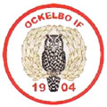

1904 - 2004

Den 23 februari 2004 bildades Ockelbo Idrottsförening på initiativ av tjänstemannen J C Brunner vid Kopparbergs och Hofors Sågverksaktiebolag. Den första idrottsgrenen i föreningen blev gymnastik på grund av att han själv var en god gymnast.
År 1904 iordningställdes en anläggning mellan Wij säteri och Wijdammen där de första idrottstävlingarna hölls sommaren 1906 med allmän idrott och fotboll. Andra grenar som förekommit är bl.a cykel, skidor, bandy, simning, vattenpolo och simhopp. I simhopp som utövades i Wijdammen, skördades stora framgångar.
År 1919 ställde Kopparbergs och Hofors Sågverksaktiebolag mark till förfogande på den plats där den nuvarande anläggningen är belägen. År 1930 fullbordades arbetet med anläggningen enligt RF´s ritningar till en kostand av 15 000 kr.
En stor händelse i OIF´s historia inträffade 1935 när föreningen fick i uppdrag att anordna SM i terränglöpning. Uppdraget klarades perfekt och en tidning skrev rubriken ”Ockelbo var det ja” redan då.
Fotbollen är den sport som har utövats mest genom åren. Den startades 1904 och har utvecklats stort inom föreningen.
OIF fotboll
består idag av A-lag och B-lag samt åtta ungdomslag. Verksamheten
kännetecknas av optimism, engagemang och en framtidstro på fotbollen i
Ockelbo.
A-laget
har i år återigen lyckats att ta sig upp i div IV, vilket betyder mycket
för återväxten inom fotbollen i Ockelbo.
I Ockelbo har ishockey spelats på serienivå under drygt 50 år.
År 1952 bildades
ishockeysektionen och där skördades stora framgångar.
De första åren hette laget Ockelbo AIK.
Under slutet av 1950-talet och några år in på 60-talet hade ishockey sin
glansperiod, då spelet var förlagd i div II. Det var då den näst högsta
serien och publiken, mellan 800-1000 personer, stod i dubbla rader runt
rinken.
Ishockeyrinken var då placerad vid nuvarande parkeringen strax nedanför Centrumhuset.
En milstolpe föreningens historia var 1988 när en konstfrusen isbana började att planeras i samarbeten med Ockelbo kommun.
Den nya konstfrusna hockeybanan stod klar 1990, till stor del med hjälp av frivilliga arbetsinsatser och invigdes officiellt den 8 december 1990.
OIF Hockey har idag ett representations lag samt tre ungdomslag som deltar i seriespel. Vidare finns skridskoskola för de yngsta samt ett veteranlag som regelbundet träffas och tränar.
A-laget har varit med och kämpat i toppen av div III under de senaste åren.
Säsongen 2000 – 2001 spelade laget i div II och förra säsongen slutade med kvalspel till div II.
OIF Gympa
Gympan har varit ryggraden i vår sektion under alla år. Mycket styrka som varvas med kondition och lätta steg. Pulsen ska här höjas och sänkas med varierande tempo och rörelser.
Vattengympa har vi haft sedan simhallen byggdes. Vatten är den idealiska platsen för träning. Ett roligt, effektivt och skönt sätt att motionera till härlig musik.
Aerobic hela kroppen, alla muskelgrupper är delaktiga. Kondition, styrka och rörlighet på ett roligt sätt. Dance-Aerobic är en fartfylld version av aerobic som passar dig som vill lägga in mer dans i din träning.
Chi Ball är en trendig träningsform, där du tränar kroppen och själen. Träningens främsta mål är att förbättra andning, rörlighet, kroppshållning och balans.
Step-Up, här utförs momenten genom olika steg- och rörelsekombinationer, upp och ned på en specialkonstruerad ”bräda”.
Nytt klubbhus med omklädningsrum, cafeteria och kansli invigdes den 13 juni 1996.
Årliga aktiviteter inom föreningen är inomhuscuperna BILMA Cup för seniorer och Petter Sjögrens Minne för ungdomar samt vinter och sommarmarknaden.
Jubileumsfirandet
Ishockeyns dag den 20 februari 2004
Jubileumsfest den 21 februari 2004
Fotbollens dag den 28 augusti 2004
Styrelsen i Ockelbo IF består av:
Börje Hallin, Ulf Åkerlund, Ulf Andersson, Martha
Rickardsson och Krister Ederth
Ockelbo.nu redaktionen:
Sammandrag från OIF´s jubileumsblad som utskickades i
februari månad 2004.
Kopparberg och
Hofors Sågverksaktiebolag namnändrades 1937 till Kopparfors AB.
OIF Fotboll: A-laget i fotboll vann serien i div IV som nykomlingar och spelar för första gången i föreningens historia i div III nästa år (2005).